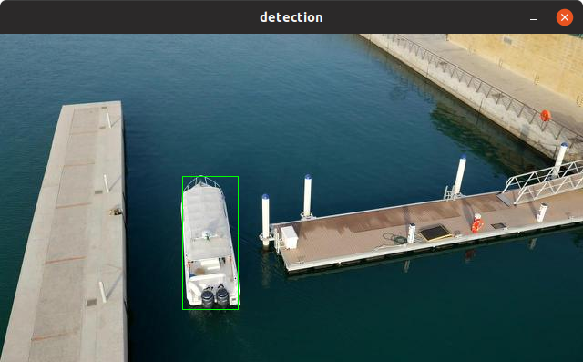

Getting Started¶
Installation¶
Requirements¶
The following steps have been tested for Ubuntu 18.04 but should work with other distros as well.
Most required packages can be installed using the following commands
(sudo permission may be required):
$ sudo apt-get install build-essential perl git pkg-config check $ sudo cpan install JSON Sort::strverscmp
This project also depends on TensorLight, a lightweight tensor operation library. Install it according to its repository before continuing to build LightNet.
-
(Optional) Packages for building documents
Use the following commands to install the packages for building documents:
$ sudo apt-get install python3-pip $ pip3 install -U mkdocs markdown>=3.1.1 pygments
-
(Optional) Packages for building python packages
Use the following commands to install the packages for building python packages (python3 for example):
$ sudo apt-get install python3-setuptools
-
(Optional) CUDA dependency
You also have to install CUDA 8.0 (or later) according to its website CUDA Toolkit if you want to build with CUDA support. Remember to put
nvcc(usually in/usr/local/cuda/bin) in environment variablePATH. -
(Optional) cuDNN dependency
You also have to install CUDA 8.0 (or later) and cuDNN 7.0 (or later) libraries, according to their websites CUDA Toolkit and cuDNN if you want to build with cuDNN support.
-
(Optional) TensorRT dependency
You also have to install CUDA 8.0 (or later) and TensorRT 3.0 (or later) libraries, according to their websites CUDA Toolkit and TensorRT if you want to build with TensorRT support.
Building and Installation¶
-
Clone this repository to your local directory.
$ cd <my_working_directory> $ git clone https://github.com/zhaozhixu/LightNet.git $ cd LightNet
-
Configure and build
First, configure your installation using:
$ chmod +x configure $ ./configure
There are options to custom your building and installation process. You can append them after
./configure. For example, use$ ./configure --install-dir=DIR
to set the installation directory (default is
/usr/local). Use$ ./configure --with-cuda=yes
if you want to build with CUDA support.
Detailed
./configureoptions can be displayed using./configure -h.After that, use
maketo compile the binaries, and run the test. Finally, usemake installto install the build directory into the installation directory. -
Other
makeoptionsUse
make infoto see othermakeoptions. Especially, you can usemake cleanto clean up the build directory and all object files, andmake uninstallto remove installed files from the installation directory.
After compilation and installation, the following components will be installed:
lightnet: LightNet command line toolliblightnet.so: LightNet runtime libraryil2json: LightNet intermediate language (IL) interpreterpylightnet(optional): LightNet python wrapper package
Usage¶
LightNet provides 3 interfaces which can be used by developers and users:
Command Line Interface¶
From the command line, type lightnet -h to display the program's usage.
The command line interface is designed for two purposes:
- Compile a neural network model to an optimized model on the specified target platform to be run later with CLI or API.
- Run the optimized model with fixed data for debug/test purpose.
By default, lightnet both compiles and runs the model with zeroed data.
It accepts models in the form of
Intermediate Representation
written in JSON. For a simple example, suppose we have a tiny network composed of
three operators: create, slice, and print, which create a tensor,
slice it in some dimensions and print it to stdout, as described
here.
If we save the above tiny model in example.json, execute the following
command, and we will get print's message:
$ lightnet example.json tensor2: [[2.000 3.000 4.000] [6.000 7.000 8.000]] info: run time: 0.000019s
There is a more complicated example. To play with this example, LightNet should be configured with
--with-tensorrt=yes
Suppose there is a YOLOv3
model in yolov3.json generated by il2json (described in
Model Format section later):
$ il2json protos/net/yolov3.net -o yolov3.json
Then the following command will compile the yolov3.json model
for the TensorRT
platform, save the compiled model in out.json,
and run the compiled model with zeroed data.
$ lightnet -t tensorrt yolov3.json info: run time: 0.015035s
As we can see, combined with il2json utility, more human-readable IL (
Intermediate Language)
models can also be accepted. In the following command, il2json first reads
the IL model in protos/net/yolov3.net and prints converted
IR model to the pipe, then lightnet reads the IR model from the pipe
(the trialing - tells lightnet to read from stdin), compiles and runs it.
$ il2json protos/net/yolov3.net | lightnet -t tensorrt - info: run time: 0.014997s
To just compile a model without running it, use the -c option. Default output
file name is out.json, and -o option can change the output file name.
$ lightnet -t tensorrt -c -o yolov3-compiled.json yolov3.json
And then we can just run the compiled model efficiently without compilation,
use the -r option.
$ lightnet -r yolov3-compiled.json info: run time: 0.014979s
And if you have prepared a specific
data file
for the tensors in the model (maybe the weights), you can specify it with
-f option.
$ lightnet -r yolov3-compiled.json -f your-datafile.wts
C API¶
An example using the C API is in example/object-detect.c.
This example performs an single-object detection algorithm using TensorRT, with ShuffleNetV2 as back-bone conv-net and SqueezeDet's detection part as feature expression algorithm.
To play with this demo, LightNet should be configured with
--with-tensorrt=yes
And to minimalize dependencies, this demo uses
libjpeg to read JPEG files, which requires
libjpeg-dev package to be installed, and can be installed in Ubuntu via
$ sudo apt-get install libjpeg-dev
After the compilation and installation of LightNet, you need to enter the
example directory and compile the demo:
$ cd example $ make
Then, in the example directory, enter the following commands:
$ il2json data/shuffledet_dac.net -o data/out.json $ ./object-detect data/out.json data/shuffledet_dac.wts data/images
And you should get a series of bounding boxes coordinates (xmin, ymin, xmax, ymax), one for an input image, printed in the terminal like this:
[197.965088, 163.387146, 275.853577, 323.011322] [197.478195, 161.533936, 276.260590, 322.812714] [197.014648, 158.862747, 276.261810, 322.054504] [196.676514, 160.987122, 275.435303, 322.000763] [196.797455, 160.380035, 274.323181, 320.533020] [196.917221, 161.277679, 273.463776, 319.580872] ...... frames per second of detection: 245.948881
In real projects, developers may draw the bounding boxes in the original image with any libraries they like (such as OpenCV, GTK...).
The Data Structures Documentation describes the technical details of the design and usage of C API.
Python API¶
An example using the python API is in example/detect.py and demoed with
example/object-detect.py. This example does the same detection algorithm as
the C API demo.
To play with this demo, LightNet should be configured with
--with-tensorrt=yes --with-python=yes
And OpenCV for Python3 should be installed. A possible command for installation:
$ pip3 install -U opencv-python
After compilation and installation, enter the following
commands in the example directory:
$ il2json data/shuffledet_dac.net -o data/out.json $ ./object-detect.py data/out.json data/shuffledet_dac.wts data/images
Then you should get a dection window with bouding boxes detecting the images
in example/data/images dynamicly like the following screenshot,
and a series of bounding boxes coordinates (xmin, ymin, xmax, ymax),
one for an input image, printed in the terminal.

The Python API is analogous to the C API, whose usage is generally the same.
Model Format¶
LightNet uses an independent model format (or Intermediate Representation, IR) for neural network models, to provide the ability to support model formats of all kinds of NN frameworks, and to provide the flexibility to perform various optimization operations on the NN model.
The text-format IR directly consumed by LightNet is defined in a JSON format,
which is verbose and well-formed and can be easily parsed, although a little hard
for human to read (when the model gets bigger and has tens of thousands of lines).
Thus we also provide a concise format for that JSON IR,
called LightNet Intermediate Language
(IL) for the ease of human reading, subfixed with .net.
There is of course a tool, il2json, to carry out the task of translate
the IL to JSON IR, which is installed by default.
Our sample models in protos/net directory are all written in IL.
For example, the following command translates the IL in protos/net/yolov3.net to
the IR format yolov3.json.
$ il2json protos/net/yolov3.net -o yolov3.json
Without -o yolov3.json, il2json will print to stdout, which is useful when
combined with lightnet command line tool using pipes (see
Command Line Interface for an example).
A model produced by another NN framework (such as Tensorflow or Pytorch) should
be converted to an IR or IL model before compilation. LightNet has a subproject
in tools/onnx2ln that hopes to reduce the difficulty of that procedure
utilizing the ONNX format.
But by now, the most reliable way is still to rewrite the NN model to the
concise IL format, which is often composed of about only one or two hundred
lines of code (yolov3.net has 114 lines of code).
And the other tools/onnx2ln method is still under development.